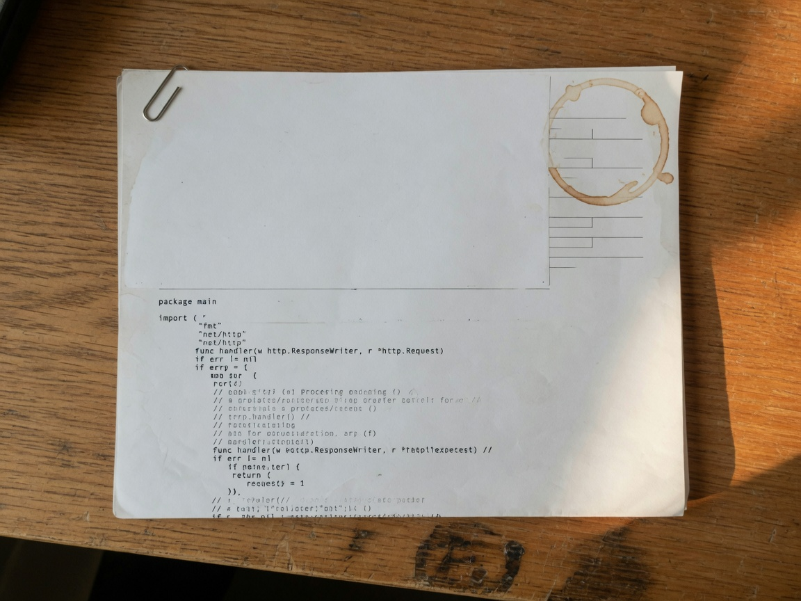
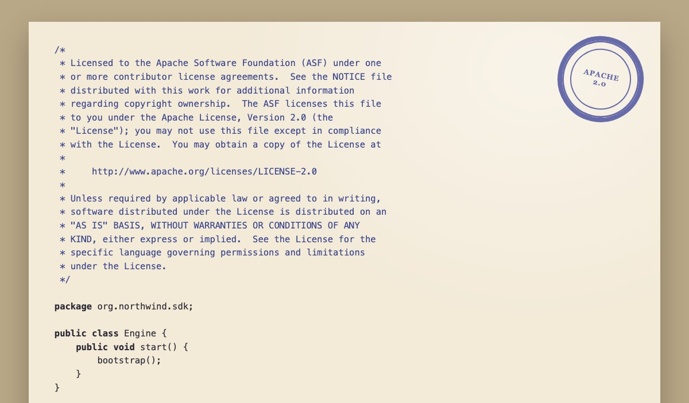
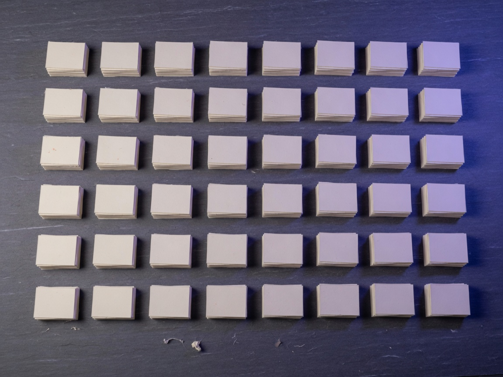
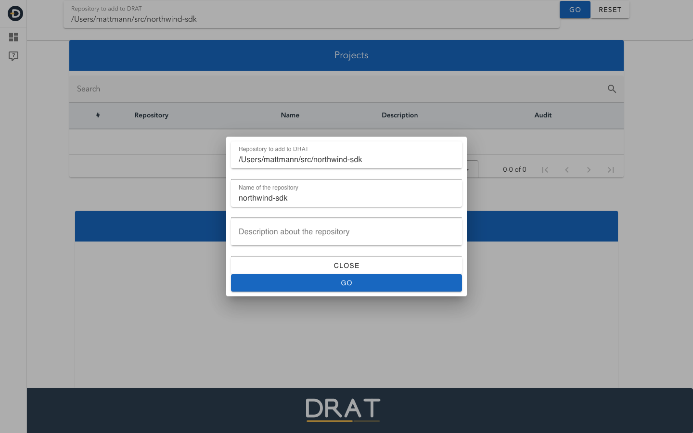

src/core/Engine.javaMnemosyne · Apache RAT · Tika · Solr
RAT on one JVM is too slow and prints nothing until it finishes. DRAT splits the tree by MIME type, runs RAT on chunks, and reduces the logs into one audit — while you watch.
$ bin/drat go ~/src/northwind-sdk
A demo audit
Nothing here is from a live repository. The listing is what a reduce
looks like after drat go: licenses from RAT, MIME types from Tika,
CSV under data/archive/rataggregate/.
The files that matter
The 748 Apache headers are not the story. The 33 unknowns are. The report exists so a human can open those files and put a header on them.


src/legacy/Util.javatext/x-javavendor/shim.ctext/x-csrcscripts/once.shapplication/x-shthird_party/hash.pytext/x-pythonOne command
drat coreMIME partition
Tika sorts first. RAT never sees a mixed pile. Chunk size is configurable. Exclude .git and target.

Map
Each stack is a chunk. Incremental logs instead of one silent RAT process. Then the reducer concatenates them.
The stamp
Apache RAT looks for a license notice in the file. DRAT is the workflow that lets that check finish on a tree RAT alone would sit on for hours.
OPSUI for the workflow. Proteus for Go and Reset. Solr cores drat and statistics.
drat reset clears crawl state and keeps stats. dratseq walks many trees. --full-wipe drops stats too.
drat go --exclude .git ~/src/northwind-sdk. Regex exclude file for the rest of the junk you do not want RAT to see.
Proteus
Proteus is the Vue 3 UI at /proteus/. You paste an absolute path, press Go, and the stack crawls.
Reset is the other button. The phases stay in bin/drat.
The audit above is what the reduce is for.

bin/drat
$ bin/oodt start $ bin/drat go --exclude .git ~/src/northwind-sdk $ bin/drat reset $ bin/drat go ~/src/another-tree
One verb for the whole audit, reset before the next tree. oodt start is the Mnemosyne launcher — the name is unchanged on purpose.